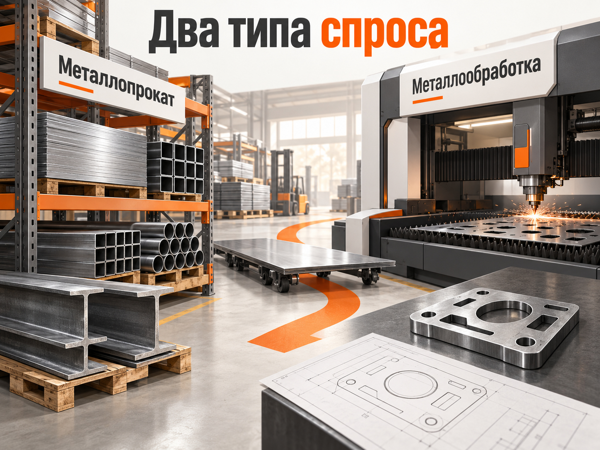
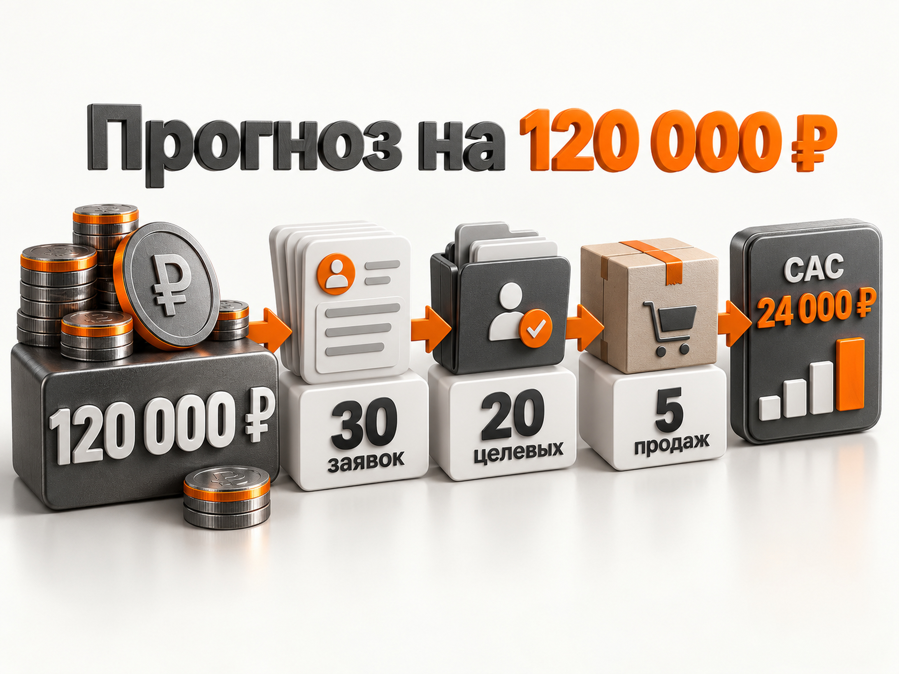
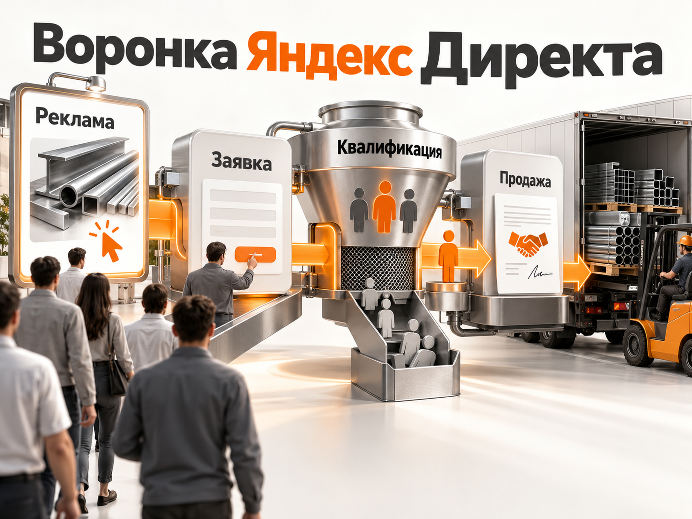

Блог о платном трафике
Продвижение металлопроката и металлообработки через Яндекс Директ
Для металлопроката и металлообработки Яндекс Директ может быть одним из основных каналов привлечения новых B2B-клиентов. Здесь есть сформированный спрос: снабженцы, строительные компании и производства ищут конкретный металл, размеры, марки стали или определённую технологию обработки.
Но объединять всю нишу в одну рекламную кампанию не стоит. Продажа листа или трубы со склада и изготовление детали по чертежу - два разных типа спроса, с разной семантикой, посадочными страницами и экономикой.
По свежим кейсам для первоначального прогноза я бы закладывал примерно 2 500-6 500 ₽ за обычную заявку и около 4 000-11 000 ₽ за квалифицированный B2B-лид. Это не средние показатели рынка, а рабочий диапазон для расчёта теста. В конкретном регионе и сегменте результат может оказаться как дешевле, так и значительно дороже.
Для регионального проекта с несколькими приоритетными направлениями разумный тестовый рекламный бюджет обычно начинается примерно со 100 000-150 000 ₽ в месяц. Если рекламировать широкий ассортимент на несколько регионов или всю Россию, бюджет может потребоваться от 150 000-300 000 ₽ и выше.

Металлопрокат и металлообработка - два разных рекламных спроса
Металлопрокат чаще относится к товарному спросу. Пользователь уже знает, что ему нужно:
- труба профильная 40х40;
- лист горячекатаный 5 мм;
- арматура А500С;
- балка двутавровая;
- швеллер;
- нержавеющий лист;
- круг или шестигранник;
- металлопрокат оптом.
Здесь важны цена, наличие, объём партии, склад, доставка, сертификаты и возможность быстро получить актуальный прайс.
Металлообработка ближе к услуге. Человек ищет технологию или подрядчика под конкретную производственную задачу:
- лазерная резка металла;
- гибка листового металла;
- плазменная резка;
- токарные работы;
- фрезерные работы;
- обработка на ЧПУ;
- изготовление деталей по чертежам;
- серийное производство деталей.
Здесь уже важнее оборудование, допустимые размеры и материалы, точность, сроки, минимальная партия, возможность работы по чертежу и реальные примеры выполненных заказов.
Поэтому даже у одной компании продажу металла и услуги обработки лучше рассматривать как отдельные рекламные направления.
Что показывают свежие кейсы Яндекс Директа
Единой «нормальной стоимости заявки на металлопрокат» не существует. Даже внутри одной ниши экономика сильно зависит от формата кампании.
В опубликованном в июне 2026 года кейсе компании, продающей металлопрокат и оказывающей услуги металлообработки, было получено 58 заявок. Средняя стоимость заявки составила 2 668 ₽. При этом классический Поиск давал заявку уже по 6 088 ₽, а 42 из 58 обращений пришли из Мастера кампаний. Автоматическая кампания в этом конкретном проекте оказалась примерно в 4,5 раза дешевле Поиска. Это хороший пример того, почему нельзя заранее объявлять один формат Директа лучшим для всей ниши.
Другой свежий пример показывает ещё более важную проблему. В кейсе производителя металлоконструкций стоимость квалифицированного лида снизили с 7 872 до 4 208 ₽, а число квалифицированных обращений выросло на 70%. Существенная часть первоначальных «лидов» на самом деле была не клиентами, а поставщиками, перевозчиками и другими компаниями, которые сами хотели что-то продать производителю. После разделения контактов отдела продаж и снабжения рекламный алгоритм начал получать более чистые данные.
Есть и полезный пример стоимости трафика. В августе 2025 года поисковая реклама металлопроката в Казани дала 510 переходов при расходе 85 988,83 ₽. Средний CPC составил 168,61 ₽. Реальные звонки в этом проекте не отслеживались, поэтому использовать его для расчёта CPL нельзя, но он показывает порядок стоимости горячего поискового трафика.
Из этих данных следует важный практический вывод: считать нужно не только заявки. Для металлопроката и металлообработки рабочая воронка выглядит так:
реклама → обращение → квалифицированный лид → расчёт или КП → продажа
Иначе дешёвая заявка может оказаться дорогой после проверки её качества.

Кого привлекать рекламой
Для металлопроката основной B2B-спрос обычно формируют строительные организации, производства, подрядчики, металлобазы, монтажные компании, изготовители оборудования и другие предприятия, которым металл нужен как материал.
Решение часто принимает не собственник бизнеса, а снабженец, инженер, технолог или руководитель производства. Поэтому запросы могут быть очень техническими.
Покупатель металла обычно сравнивает:
- цену и наличие;
- стоимость и сроки доставки;
- минимальный объём;
- производителя;
- соответствие ГОСТ;
- возможность резки в размер;
- дополнительные услуги;
- условия оплаты.
В металлообработке набор критериев меняется. На первый план выходят оборудование, технологические возможности, точность, материал, толщина, размеры заготовки, объём партии и срок изготовления.
Поэтому объявление «Металлопрокат и металлообработка. Высокое качество. Выгодные цены» почти ничего не сообщает покупателю.
Гораздо полезнее отвечать на его конкретную задачу.
Каким должен быть сайт
Для большого ассортимента металлопроката нужен нормальный каталог. Пользователь должен быстро перейти от запроса к нужной категории и увидеть характеристики товара.
Для металлопроката на странице полезно показать наличие или возможность поставки, размеры, марки стали, цены или способ получить актуальную цену, условия доставки, минимальную партию, сертификаты и дополнительные услуги.
Для металлообработки посадочная страница должна отвечать минимум на четыре вопроса:
- Что именно можно изготовить.
- На каком оборудовании.
- С какими материалами и размерами работает производство.
- Как отправить чертёж и получить расчёт.
Форма «Оставьте имя и телефон» для сложного B2B-заказа часто недостаточна. Полезнее дать возможность прикрепить чертёж, техническое задание или спецификацию.
Не стоит вести запрос «лазерная резка металла» на главную страницу завода, где одновременно продаются трубы, арматура, профнастил, металлоконструкции и ещё десять услуг.
Связка должна быть максимально прямой:
запрос → конкретное объявление → конкретная страница → расчёт
Как я бы строил Яндекс Директ
В 2026 году в режиме эксперта основные перфоманс-задачи можно решать через Единую перфоманс-кампанию. Она позволяет управлять размещением на Поиске, в РСЯ и Картах. Для товарного ассортимента Директ также позволяет создавать товарные объявления на основании сайта, YML-фида или CSV и показывать предложения в том числе в товарной галерее.
Поиск под металлопрокат
Я бы начинал с наиболее важных товарных групп, а не пытался сразу рекламировать весь склад.
Например:
- Листовой прокат - горячекатаный лист, холоднокатаный, оцинкованный, рифлёный, нержавеющий.
- Трубы - профильные, круглые, электросварные, бесшовные.
- Сортовой прокат - арматура, круг, квадрат, шестигранник.
- Фасонный прокат - швеллер, уголок, двутавр.
Дополнительно можно отдельно выделить запросы «оптом», «с доставкой», «цена», «прайс», конкретные размеры и марки.
Делать отдельную кампанию на каждый размер трубы не нужно. Дробление имеет смысл только тогда, когда отличаются экономика, посадочная страница, география или рекламное предложение.
Поиск под металлообработку
Здесь логичнее делить рекламу по технологиям:
- лазерная резка;
- плазменная резка;
- гибка;
- токарная обработка;
- фрезеровка;
- сварка;
- ЧПУ;
- изготовление деталей по чертежам.
Если оборудование или маржинальность сильно отличаются, направления лучше разделять.
Запрос «лазерная резка» и запрос «токарные работы» могут привести одного и того же B2B-заказчика, но это совершенно разные задачи. Объединять их в одно универсальное объявление нет смысла.
Товарные объявления
Для металлобазы с большим структурированным каталогом это обязательная гипотеза для теста.
Директ позволяет автоматически создавать товарные объявления на основании ассортимента сайта или фида. Это особенно интересно для типовых позиций, где понятны товар, размер и цена.
Для нестандартной металлообработки товарный формат обычно менее естественен. Там ценность дают обычные объявления, посадочная страница и запрос расчёта по техническому заданию.
Мастер кампаний
Игнорировать Мастер кампаний только потому, что это более автоматизированный инструмент, не стоит.
В свежем кейсе металлопроката он дал 42 из 58 заявок и оказался существенно дешевле классического поиска. Это не означает, что такой результат повторится у другой металлобазы, но формат точно заслуживает отдельного теста.
Я бы не смешивал его статистику с классическим Поиском. Тогда будет понятно, какой источник действительно даёт качественные обращения.
РСЯ
РСЯ лучше запускать отдельно от Поиска. Сам Яндекс рекомендует разделять поисковое размещение и сети, поскольку у них разные механизмы показа и ценообразования.
Для металлопроката и металлообработки я бы рассматривал РСЯ прежде всего как дополнительный источник спроса и инструмент повторного контакта.
В аудитории можно тестировать посетителей конкретных разделов, пользователей, изучавших определённые услуги, сегменты Метрики и тематические интересы.
Особенно полезен ретаргетинг при длинной сделке. Клиент может сегодня запросить несколько предложений, через неделю получить коммерческие предложения, а решение принять ещё позже.
Семантика и поисковые запросы
В этой нише нельзя ограничиваться только очевидными высокочастотными фразами.
Часть самых ценных запросов очень конкретная:
- «лист 09г2с 10 мм купить»;
- «труба 100х100х5 цена»;
- «лазерная резка нержавейки 3 мм»;
- «изготовление деталей из стали по чертежу».
Пользователь уже описывает почти готовую потребность.
Но чем шире семантика, тем выше риск получить информационный и нецелевой трафик.
Типичные источники мусора:
- работа и вакансии;
- обучение и курсы;
- станки и оборудование для самостоятельной обработки;
- чертежи;
- ГОСТы без коммерческого намерения;
- металлолом;
- б/у продукция;
- бесплатные материалы;
- розница при работе только с оптом.
Минус-слова нельзя просто загрузить один раз и забыть.
После запуска нужно регулярно смотреть фактические запросы. В Директе для этого есть отдельный отчёт «Поисковые запросы», который показывает, по каким формулировкам действительно происходили показы.
Для промышленной рекламы это один из главных рабочих отчётов.
География особенно важна для металлопроката
Для услуги металлообработки клиент иногда готов отправить детали или заказать производство в другом регионе, особенно если работа дорогая или специализированная.
У металлопроката логистика влияет на экономику значительно сильнее.
Нет смысла получать дешёвую заявку за 2 000 ₽, если доставка делает предложение неконкурентоспособным.
Поэтому географию нужно определять не по принципу «куда можем теоретически привезти», а по фактической экономике сделки.
Можно разделить:
- локальный регион вокруг склада;
- соседние регионы с нормальной логистикой;
- федеральные поставки для крупных партий.
Если экономика и предложение отличаются, рекламировать их одной кампанией не обязательно.
Аналитика должна доходить до квалификации
Одна из главных ошибок этой ниши - обучать Директ на всех заявках подряд.
Производственной компании могут писать:
- поставщики сырья;
- перевозчики;
- соискатели;
- продавцы оборудования;
- компании, предлагающие услуги;
- частники с заказом ниже минимальной партии.
Формально всё это может попасть в статистику как конверсия.
Если алгоритм оптимизируется по такой цели, он получает сигнал: «приводи больше похожих пользователей».
Именно эта проблема хорошо видна в кейсе производителя металлоконструкций, где после отделения контактов снабжения от контактов отдела продаж стоимость квалифицированного лида снизилась до 4 208 ₽.
Поэтому минимальная аналитика здесь:
заявка → квалифицированный лид → продажа
Яндекс позволяет передавать офлайн-конверсии из CRM через Центр конверсий, интеграцию CRM или API и использовать эти данные для анализа и оптимизации кампаний.
Подробнее эта схема разобрана в материале про офлайн-конверсии.

Какую стратегию использовать
Я бы не включал оплату за конверсии автоматически на новом проекте.
У Яндекса для конверсионной стратегии минимальный ориентир составляет 10 конверсий в неделю. В рекомендациях по эффективности Директ советует обеспечивать бюджет примерно на 10-20 конверсий в неделю. При меньшем объёме данных обучение становится менее устойчивым.
Если один узкий вид металлообработки приносит две заявки в неделю, дробить его ещё на пять самостоятельных кампаний и оптимизировать каждую по заявкам бессмысленно.
На старте можно использовать оплату за клики и собирать нормальную статистику, а затем переводить кампанию на конверсионную оптимизацию.
Если несколько близких кампаний отдельно не набирают достаточно данных, можно рассматривать пакетную стратегию. Яндекс указывает для неё ориентир не менее 10 конверсий в неделю суммарно по объединённым кампаниям.
Прогноз CPL и бюджета
Свежие опубликованные кейсы не позволяют корректно назвать один «средний CPL по металлопрокату». Условия слишком разные.
Поэтому для предварительного расчёта я бы использовал следующий рабочий диапазон:
| Показатель | Рабочий ориентир |
|---|---|
| Обычная заявка | 2 500-6 500 ₽ |
| Доля квалифицированных лидов | около 60% для расчёта |
| Квалифицированный лид | примерно 4 000-11 000 ₽ |
| Конверсия квалифицированного лида в продажу | 20-30% как расчётное допущение |
Это именно модель прогноза, а не рыночная статистика.
Посчитаем рекламный бюджет 120 000 ₽ в месяц.
Осторожный сценарий
CPL - 6 500 ₽.
120 000 / 6 500 = примерно 18 заявок.
При 60% квалификации получаем около 11 подходящих лидов.
При конверсии квалифицированного лида в продажу 20% - примерно 2 продажи.
Рекламный CAC - около 60 000 ₽.
Рабочий сценарий
CPL - 4 000 ₽.
120 000 / 4 000 = 30 заявок.
Если квалифицированы 65%, получаем около 20 целевых лидов.
При конверсии в продажу 25% - около 5 продаж.
Рекламный CAC - около 24 000 ₽.
Сильный сценарий
CPL - 2 500 ₽.
120 000 / 2 500 = 48 заявок.
При 70% квалификации - около 34 целевых лидов.
При конверсии в продажу 30% - около 10 продаж.
Рекламный CAC - около 12 000 ₽.
Разброс большой специально. Между металлобазой с популярными позициями в наличии и предприятием, которое выполняет сложную единичную обработку по чертежам, нельзя ставить одинаковую стоимость привлечения.
Какой бюджет закладывать на старт
Для одного региона и одного-двух приоритетных направлений я бы не пытался сразу охватить весь ассортимент.
Ориентироваться можно примерно так:
- 60 000-80 000 ₽ в месяц - узкий тест нескольких групп горячего спроса. Статистики для полноценной конверсионной оптимизации может не хватать.
- 100 000-150 000 ₽ - более реалистичный старт для нескольких приоритетных направлений с возможностью параллельно протестировать Поиск и один дополнительный формат.
- 150 000-300 000 ₽ и выше - широкий ассортимент, несколько регионов или федеральное продвижение.
Сам размер компании здесь вторичен. Главное - сколько рекламных направлений нужно одновременно проверить и сколько целевых событий каждое из них способно накопить.
Как понять допустимую стоимость лида
Начинать лучше не с вопроса «сколько стоит заявка у конкурентов», а с экономики своей продажи.
Например, компания готова тратить на привлечение нового клиента максимум 30 000 ₽.
Из десяти квалифицированных лидов в продажи превращаются три.
Конверсия - 30%.
Допустимая стоимость квалифицированного лида:
30 000 × 30% = 9 000 ₽.
Если только 60% первичных обращений проходят квалификацию, допустимая стоимость обычной заявки:
9 000 × 60% = 5 400 ₽.
Вот уже от этой цифры имеет смысл оценивать рекламную кампанию.
Заявка за 6 000 ₽ при такой экономике действительно дорогая. А заявка за те же 6 000 ₽ при допустимом CAC 100 000 ₽ может быть отличным результатом.
Основные ошибки при продвижении
Самая частая ошибка - объединить весь металлопрокат и всю металлообработку в одну рекламную конструкцию.
- Вторая - вести всё на главную страницу.
- Третья - пытаться получить максимальное количество заявок, не проверяя их качество.
- Четвёртая - считать звонки, клики по номеру телефона, скачивание прайса и отправку формы одинаково ценными конверсиями.
- Пятая - рекламироваться по всей России без расчёта логистики.
- Шестая - запустить несколько десятков маленьких кампаний и лишить алгоритмы статистики.
- Седьмая - оптимизироваться по заявкам, среди которых половина приходится на поставщиков, частников и другие нецелевые обращения.
Для производственного B2B качество лида почти всегда важнее красивого CPL в рекламном отчёте.
План запуска Яндекс Директа
Я бы запускал продвижение в следующем порядке.
- Разделить металлопрокат и металлообработку. Определить, какие направления действительно нужно загружать заказами.
- Рассчитать экономику. Определить максимальный CAC, конверсию отдела продаж и допустимую стоимость квалифицированного обращения.
- Проверить посадочные страницы. Под каждый важный сегмент должен быть релевантный каталог или страница услуги.
- Настроить аналитику. Метрика, формы, звонки, CRM и передача квалифицированных лидов.
- Запустить горячий Поиск. Сначала самые коммерческие категории и технологии.
- Подключить товарные объявления для металлопроката. Особенно если сайт содержит большой структурированный ассортимент.
- Отдельно протестировать Мастер кампаний. Свежий кейс этой ниши показывает, что автоматический формат способен значительно обойти классический Поиск по CPL, но это нужно проверять именно на своей компании.
- Тестировать РСЯ отдельно. Не смешивать её статистику с поисковой рекламой.
- Еженедельно проверять реальные запросы и качество лидов. Отключать не просто дорогой трафик, а трафик, который не превращается в нормальные запросы от бизнеса.
- Масштабировать только подтверждённые направления. Сначала добиться рабочей экономики на части ассортимента, затем добавлять новые категории, услуги и регионы.
Итог
Яндекс Директ хорошо подходит для продвижения металлопроката и металлообработки, потому что значительная часть спроса уже сформирована и выражается конкретными поисковыми запросами.
Но главный показатель здесь - не количество форм с сайта.
Для нормальной оценки рекламы нужно видеть всю цепочку:
расход → заявка → квалифицированный B2B-лид → коммерческое предложение → продажа.
Для первоначального прогноза я бы закладывал примерно 2 500-6 500 ₽ за первичную заявку и около 4 000-11 000 ₽ за квалифицированный лид. Для регионального теста нескольких направлений - порядка 100 000-150 000 ₽ рекламного бюджета в месяц.
Дальше прогноз нужно пересчитывать уже на реальных данных конкретной металлобазы или производства: ассортименте, географии, среднем заказе, марже, логистике и фактической конверсии отдела продаж.
Общую логику настройки рекламы производственных компаний я отдельно разобрал в материале про Яндекс Директ для производства.